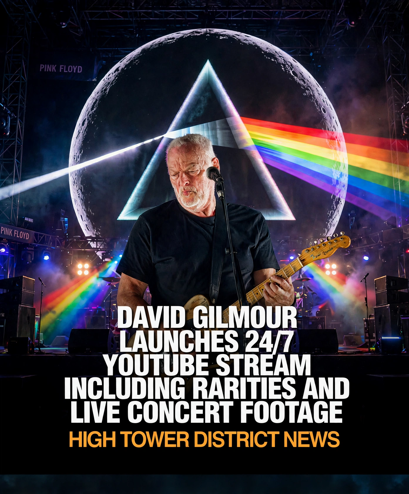

The headline in the image
David Gilmour launches a 24/7 YouTube stream, including rarities and live concert footage. That headline comes from the original image shared for this story, rebranded here as High Tower District News at the request of the story owner. This page presents the story image as shared, and does not add a separate verification of the stream launch.
The stage in the image
Behind Gilmour is a full Pink Floyd stage. The centerpiece is the circular screen, showing the moon, with the Dark Side of the Moon prism at its heart. A beam of white light enters the prism and leaves as a rainbow, spreading across the stage in red, orange, yellow, green, blue, and violet.
It is the image Pink Floyd fans know at a glance, and it is why this story image works at story size: one figure, one guitar, one screen, and one beam of color.
Why this image was customized
The original image carried other news branding. For this High Tower District version, that branding was removed and replaced with High Tower District News, with High Tower as two words. The stage, the circular screen, the prism, the rainbow, and the headline text were kept as they were.
Closing note
Turn the lights down, turn the stream up, and let the prism do what it has always done: split one beam into every color at once.